Analogue
It's important that life doesn't just revolve around computers and I make sure to do things with my hands other than type. These projects may involve computers in some way, but their final manifistation is corporial and physical.
Merlin Fob
I was tasked with fabricating a replacement housing for Merlin M842 remote control for a garage door. Given that the device is most commonly carried on a key chain or thrashed around in a car glovebox, the housing ends up taking a beating with age and a replacement can cost as much as $60 to $90. My goal was to create a competent replacement that would:
- be user serviceable (accessible battery compartment)
- have the led indicator visible
- have a slimmer profile than the original
- be easy to manufacture using a hobby grade FDM 3D printer
- Didn’t take too long to design or print

The circuit board of the remote is a circle, the battery is centered on the back and the buttons are simple printed contacts that get shorted by the rubber buttons. The original rubber buttons were ripped and I ended up salvaging buttons from a calculator that had conductive carbon coating on the bottom.
My design essentially boiled down to two components – the “housing” that’s the main body holding all the components and has the keychain loop, and the “cap” that holds the battery in place.
The design went through 6 iterations on the main body and 3 iterations on the cap. To further “slim down” the profile I made the cap have rounded edges to give a thinner feel to the whole assembly.
Getting the circuit to sit right in the housing was easy, the circuit is pretty symmetrical and key components sit at neat 45 degree angles to everything. The main challenge was to get the tolerances right on the cap for the battery to be centered on the power connector. The led indicator is simply hot glue melted through a hole in the housing. The circuit board had two convenient holes for me to thread screws through to avoid having to design a locking mechanism.

While the calculator buttons look funky and unique, I would ultimately prefer for the buttons to be hidden under the housing. They’re too easy to press accidentally or pull the rubber out of the housing. The best alternative would be to solder in some low profile hardware buttons and use the flexibility of the housing to press them through the plastic.
If you own one of these fobs and yours is falling apart, feel free to download the files and print them on your own. There’s no guarantee that the buttons that you will use be of the same dimensions, so I provided a version with the center point of the buttons for you to cut away (physically or digitally) as much material as you need for the buttons you’ll end up using.
Gba
Before the release of Gameboy Advance SP AGS-101 in 2015, all previous gameboy models had no screen backlight. I've spent countless hours playing Link to the Past and F-Zero under poorly lit conditions in my teenage years.
I've had this gameboy since I was 15 and I decided to give it a facelift with a custom aftermarket shell, glass screen cover and a backlit screen it deserved from the very beginning.
The backlit screens used to be rare and had to be harvested from a specific model of a GBSP, but now freely available from China. Thanks to this modding guide by gaggi GBA's motherboard can display a vivid and clear image.
Wing
A 3D printed fixed wing glider. Designed to be printed on a minimal 100x100mm printing bed.
Sheffield Knife
I picked up an early 1900’s English butter knife from an op shop, which had a bone handle that was completely burnt. Irefurbished it with a new handle as a small DIY project.
The handle was completely scorched, but the steel was great quality and in good condition for its age. Initially I wanted to make the handle from laminated structural timber, to have the layers show through once sanded, butit was too tough to carve with a knife, and I decided to use softer wood from a window trim.
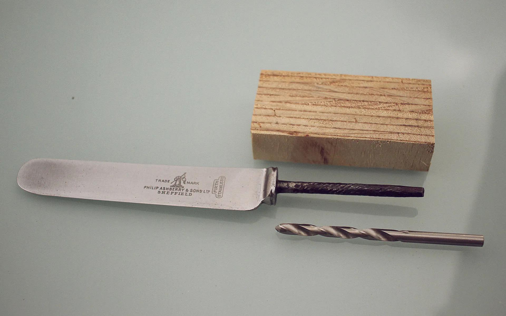 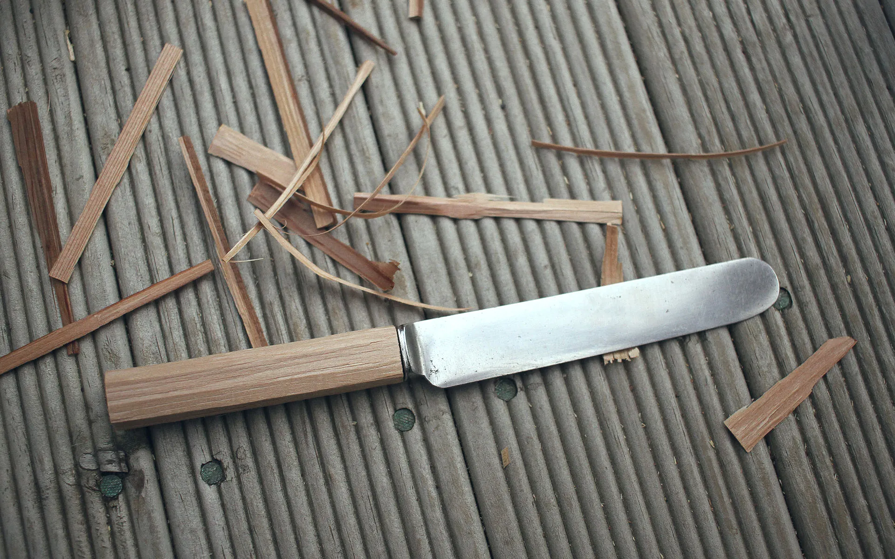
I don’t really know what type of wood it was, but it’s light and very soft. After some drilling, shaving and sanding, thehandle was pleasant to hold. I applied a coat of vinegar and iron rust mix to blacken the handle, with a top coat of linseed oil to prevent mold andgive it some water resistance.
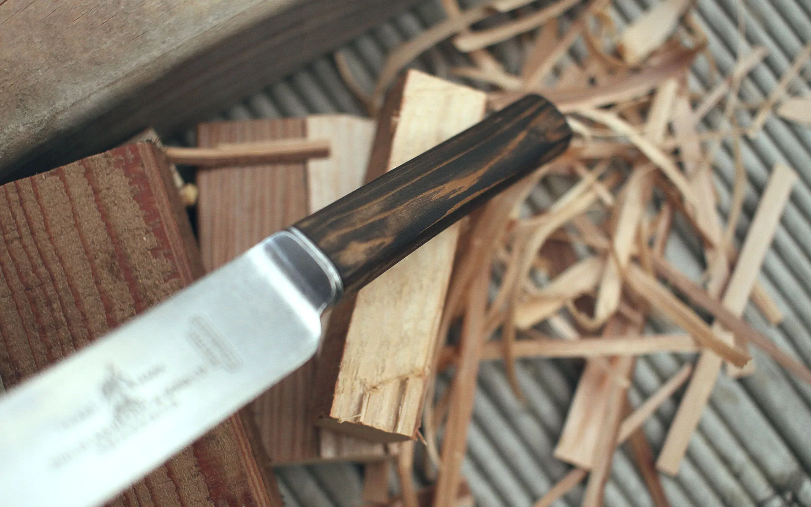
Hsv Led
An arduino controlled light strip for my former workspace. It used off the shelf components, 3D-printed and lazer-cut parts. It had 3 knobs that controlled color and brightness using HSV mapping. Code and STL files available on the project github page.
Parts
- P9813 LED controller
- 1x Arduino nano
- 3x Analogue Pots
- 1x 5v or 3.3v (depending on your Arduino) Voltage regulator
- 1x 12v power input jack
- 1x 3D printed shell
- 1x Lazer cut faceplate
Dependancies:
- FastLED Library
- ResponsiveAnalogRead Library
- ArduinoAnalogueSmooth Library
I had particularly low quality potentiometers, so the signal is over-filtered. I would use digital rotary encoders if I were to improve it.
Tada68
If your everyday work involves computers, a keyboard is something you touch every day for hours on end. Objects that you interact with every day should be beautiful.
Theme for this build is "Lava", using black and charcoal colors with orange LED lighting, assembled from individual components. Initially I wanted the plate to be made from carbon fiber, but it was hard to find a manufacturer that would do a one off at a reasonable price, so I cut the plate from PETG. It ended up working really well, scattering light and reflecting it off the white PCB.
- Custom PETG plate
- KBDfans pcb mount stabilizers
- KBDfans cnc aluminum case
- Orange smd underglow
- Orange backlight leds
- Gateron Red switches
- PBT DSA blank keycaps black
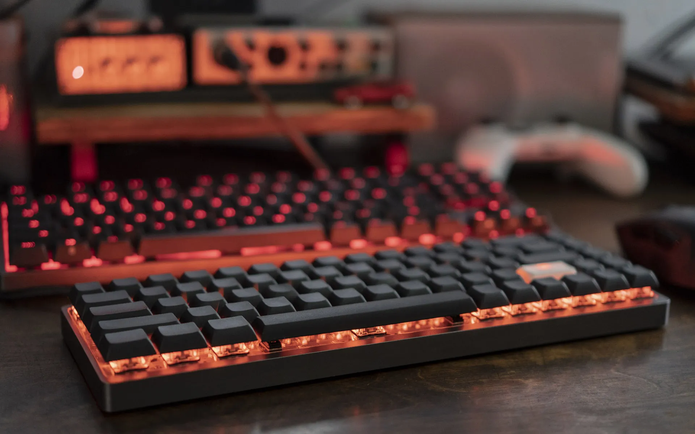
Pocket Watch
Breathing life into an old British pocket watch. Picked up at a Rotorua antique store, it came with a broken spring. A watch is a beautiful machine. It's amazing that centuries ago we figured out how to release spring tension in measured intervals that can be synced up with rotation of the Earth.
This is a visual archive of the repair process.
Edibles
Recipes and food creations.
Swordy Pins
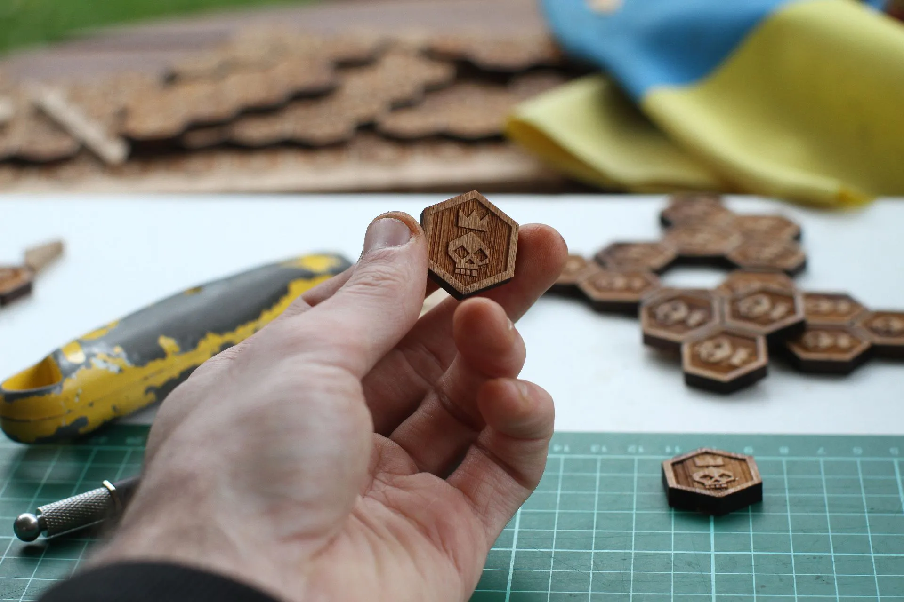
- Originally created for PAX 2014 as Swordy giveaway merch.
- Lazer cut from 5mm bamboo ply.
- Hand-glued 2600 pins.

Eachinevr006
This project offers 3D printing files and instructions to re-house the screen and electrical components extracted from a cheap FPV headset Eachine VR006 to use as a stand-alone spectator screen for Drone Racing and other RF hobby applications.
A video version of this guide is available on youtube. 3D CAD models licensed under CC BY-NC-SA 4.0
Guide
Step 1
Remove the SMA cover and the retaining brass nut.
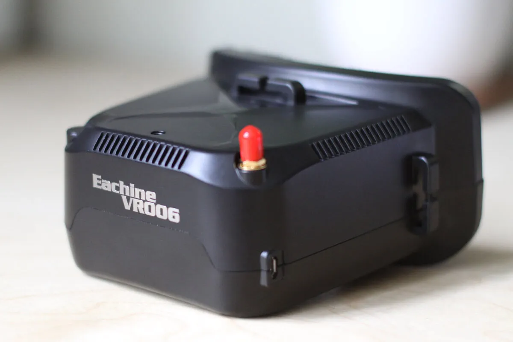
Step 2
Underneath, unscrew 4 phillips screws and lift the top half of the plastic body.

Step 3
The battery is held in place with a piece of foam and double sticky tape. Remove the foam and carefully cut along the tape with a craft knife to avoid prying the lipo battery. Remove the control board and the fresnel lens. The screen assembly should freely slide out of the housing.
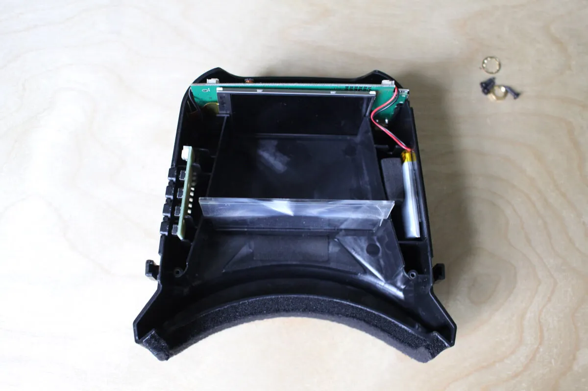
Step 4
Be careful removing the screen, as it's not attached to the circuit board. Pull them gently together to avoid damaging the ribbon cable.

There are two variants of this board - the "diversity" version with two antennas (not real RX diversity) and the single antenna version I have here, my case design is for this version.
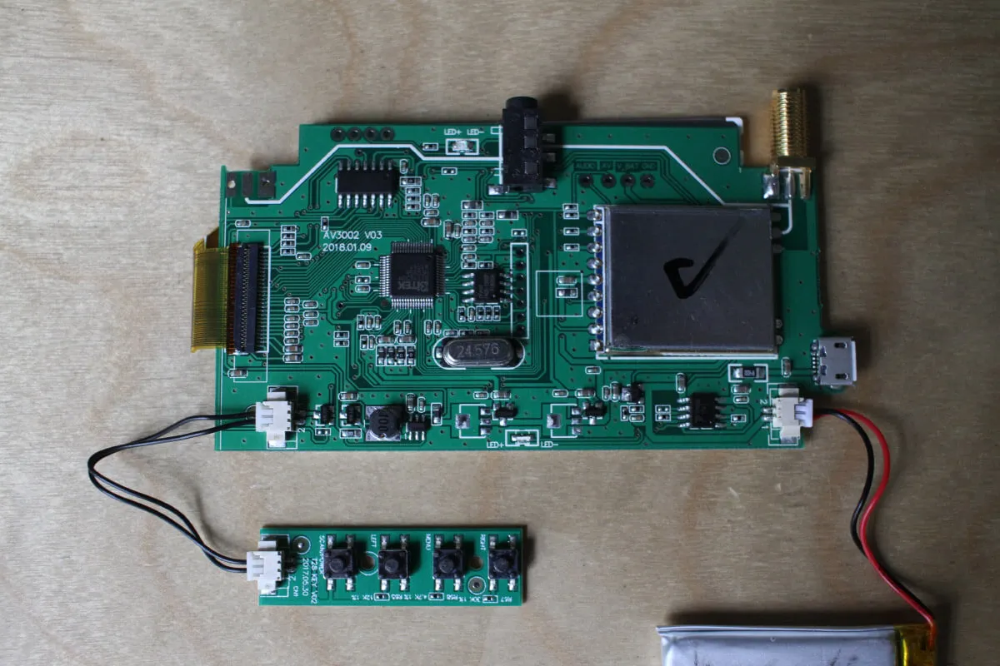
Step 5
Next, you'll tape up the exposed breakout pins to avoid short circuiting them when you secure the screen to the surface (the back of the LCD is metal).

Cut some pieces of electrical tape to cover the breakout pins and gently press the screen onto the board to secure it with double sticky tape. Use double sided tape, foam tape will make the assembly too thick.

Step 6
Navigate to /STL/, download and 3D print the housing.


I created this to fit on a 10x10 printing platform, which is common among lowest-end printers. Due to this, the USB charging port sticks out a bit. If you want to make it flush with the side of the case, simply extrude the right wall by 3mm to the left.
Step 7
Remove the metal frame from the LCD panel. It will only get caught in the ridges of the 3D print and may actually damage your screen.
Step 8
Slot the assembly into the body of the case, ribbon cable side first, carefully allowing the case to bend it over the edge.
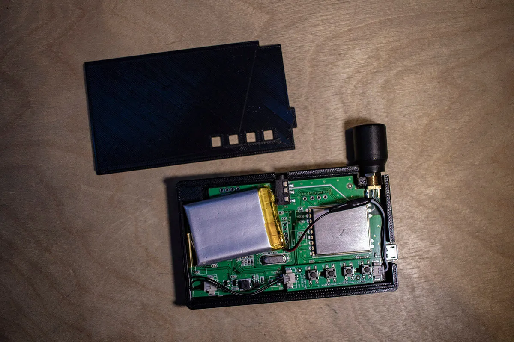
Step 9
De-solder the connector from the control board and re-attach the cables in order for the buttons to fit into the rear panel holes. Make sure to note which cable goes where, they're both black.
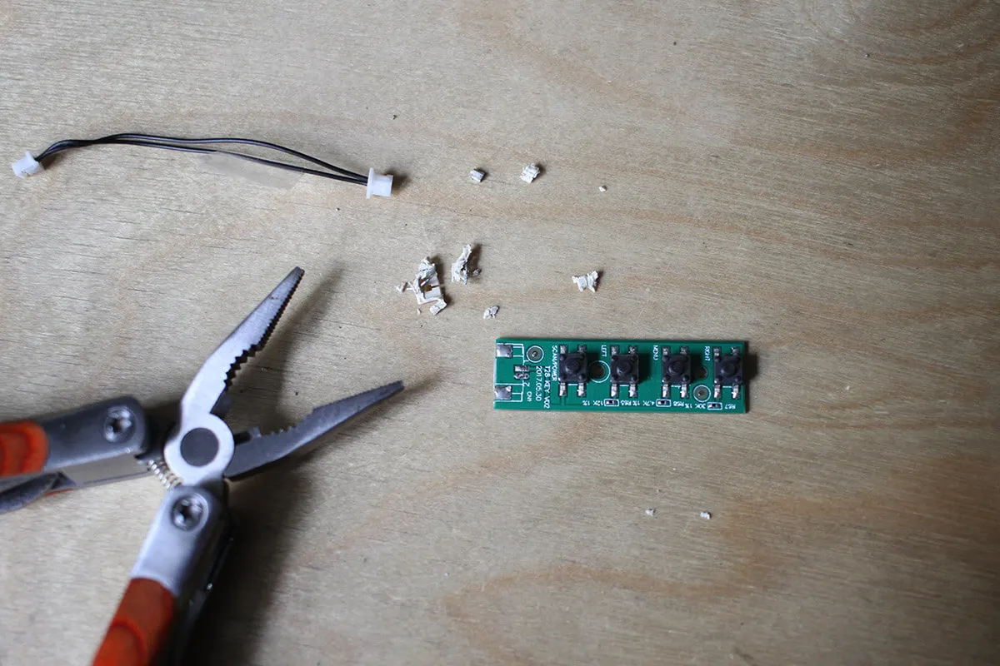
Step 10
Add some foam padding to the motherboard to sit against the control board to prevent it from sinking into the case when pressing the buttons.
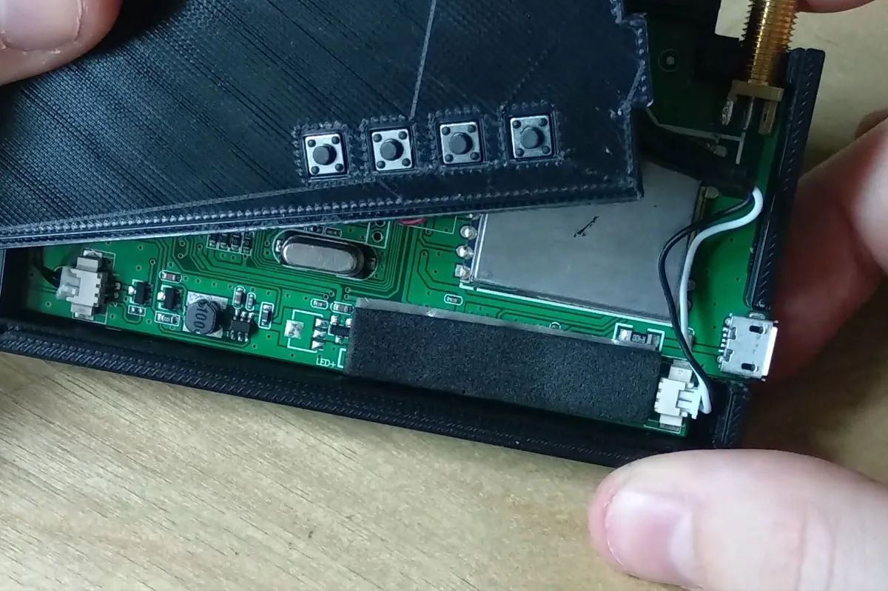
Step 11
Slot the rear cover into the bottom rail, aligning the top rail gaps then push it in to mesh both rails and slide the cover on.

Done!
Your screen assembly is now complete! Happy flying!
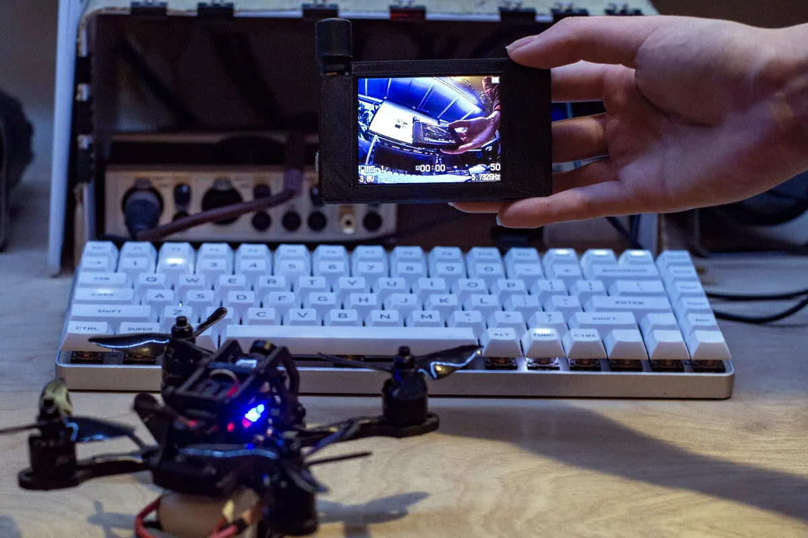
Nom V2
A sub-50g micro FPV drone that could be safely operated in small parks in windless conditions and large indoor spaces.
- Custom design CNC carbon fiber frame
- 45.5g dry weight
- 5.8Ghz fpv feed
- 7.2v 350mAh liPo
Xbl3
A custom built small form factor "everyday carry" drone for racing and freestyle with focus on weight and durability. Ideal in small parks and countries with sub-250g uav regulations.
- Dry Weight 135.5g
- Betaflight 3.3+ firmware
- 3 min flight time
- 2.4Ghz Control link
- 5.8Ghz Video link
- Recommended LiPo 650mAh - 800mAh
- Speed 90mph+
Part List
- Frame: PUDA XBL140
- Motors: RCX H1407
- Flight Controller: HGLRC XJB F440
- Reciever: FRSky XM+
- Vision: Foxeer Predator Micro
- Propellers: DALPROP Cyclone T3056C
- Misc: XT30, 18AWG, Strap, Nylon
Check your local RF regulations in regards to operating on these radio frequencies.
Check your local aviation authorities for UAV operating regulations.